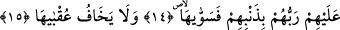
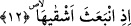

ALLAH’IN DEVESİNE VE
ONUN SU HAKKINA
DOKUNMAYIN
11. Semûd kavmi azgınlığı yüzünden (Allah’ın elçisini) yalanladı.
12. Onların en bedbahtı (deveyi kesmek için) atıldığında,
13. Allah’ın rasûlü onlara: “Allah’ın devesine ve onun su hakkına dokunmayın!”
dedi.
14. Ama onlar, onu yalanladılar ve deveyi kestiler. Bunun üzerine Rableri
günahları sebebiyle onlara büyük bir felâket gönderdi de hepsini helâk etti.
15. (Allah, bu şekilde azap etmenin) âkıbetinden korkacak değil ya!
“Semûd” kelimesinden maksad bu isimdeki kabiledir. Bu cümle bir başlangıç cümlesi
olup önceki “Onu kötülüklere gömen de ziyan etmiştir.” âyetinin mânâsını beyân
etmek üzere getirilmiştir. Çünkü azgınlık nefsi kötülüklere gömme çeşitlerinin en
büyüğüdür.
“Tağvâ” tuğyan/azgınlık mânâsına masdardır. Ancak tuğyan masdarı daha meşhur iken
bu kelime âyet sonlarındaki diğer kelimelere daha çok benzediği için tercih edilmiştir.
“Tağvâ” kelimesinin başındaki “bâ” harfi sebeb bildirmek içindir. Yani Semûd kavmi
azgınlığı sebebiyle yalanlama işini yaptı, demektir. Tıpkı “Filanca Allah’a karşı cüreti
sebebiyle bana zulmetti.” sözünde olduğu gibi.
Ya da âyet ‘Semûd, peygamberi Sâlih (a.s.)’ı yalanladı.’ demektir. Bu takdirde
bilindiği için mef‘ûl hazfedilmiştir.
Burada işâret vardır ki isyan şiddetlenip arttığında inkâra ulaşır.
“Bâ” harfinin ‘yalanlama’ kelimesine sıla olması da mümkündür. Semûd kendisine
vaad edilen azgın ve haddi aşmış azabı yalanladı, demektir. Bu azap ise korkunç bir ses
idi. Nitekim âyette “Semûd’a gelince onlar azgın bir âzâb (tâğiye)” yâni azgın bir ses
“ile helâk edildiler.” (el-Hâkka, 69/5) buyrulmuştur.